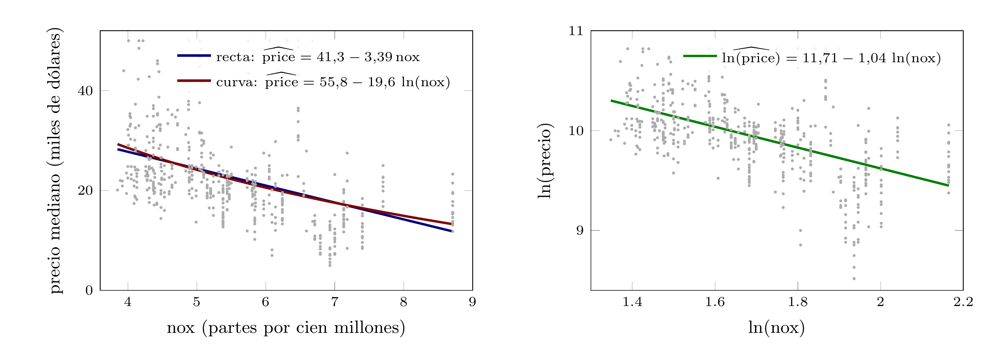

Lección 15. Formas funcionales con logaritmos: qué dice cada coeficiente
Índice
- 1. De dónde venimos:
noxylnoxeran dos formas funcionales - 2. Variable explicativa y regresor: lineal en los parámetros
- 3. Cuatro formas, cuatro lecturas del coeficiente
- 4. Log-nivel: salarios y educación
- 5. Nivel-log: la superficie de la vivienda
- 6. Log-log: modelo con elasticidad constante
- 7. Cobb–Douglas: elasticidades y rendimientos a escala
- 8. Previsión con y sin logaritmos
- 9. Lo que cambia y lo que no
- 10. Recapitulación y guiño a la lección siguiente
- 11. Preguntas de repaso (sesión 23) htmlonly
- 12. Respuestas htmlonly
Las lecciones 13 y 14 usaron nox y su logaritmo como dos regresores casi alineados. Hoy los leemos como dos formas funcionales de una misma variable explicativa. El modelo sigue siendo lineal en los parámetros y la geometría del curso se aplica sin cambios; lo que cambia es qué significa cada coeficiente: un cambio absoluto, un cambio porcentual o una elasticidad. Cierran la función de producción de Cobb–Douglas y la previsión en niveles desde un modelo en logaritmos.
``La geometría opera sobre los regresores; la lectura, sobre las variables.''
1. De dónde venimos: nox y lnox eran dos formas funcionales
Las lecciones 13 y 14 pusieron nox y lnox juntos en un modelo para ver qué pasa con dos regresores casi alineados. Hoy los separamos: cada uno, con rooms, es un modelo distinto del precio (hprice2, \(n=506\)).
| Regresando | Contaminación | coef. | \(\mathrm{ee}\) | \(t\) | \(R^2\) |
|---|---|---|---|---|---|
price |
nox |
\(-1884{,}7\) | \(253{,}6\) | \(-7{,}43\) | \(0{,}535\) |
price |
lnox |
\(-10951{,}4\) | \(1457{,}9\) | \(-7{,}51\) | \(0{,}536\) |
lprice |
nox |
\(-0{,}1233\) | \(0{,}0116\) | \(-10{,}67\) | \(0{,}511\) |
lprice |
lnox |
\(-0{,}7177\) | \(0{,}0663\) | \(-10{,}82\) | \(0{,}514\) |
Cuatro modelos, cuatro coeficientes de distinto tamaño y las mismas conclusiones estadísticas: a más contaminación le acompañan precios menores, con \(t\) entre \(-7{,}4\) y \(-10{,}8\). Los cuatro números dicen cosas distintas.
Hoy: qué significa cada coeficiente, por qué el logaritmo convierte cambios absolutos en porcentuales, y cómo se prevé en niveles con un modelo en logaritmos. Sin geometría nueva.
De dónde venimos: nox y lnox eran dos formas funcionales
La lección 13 abrió con una tabla de tres regresiones del precio mediano de la vivienda sobre rooms y la contaminación, medida en niveles (nox), en logaritmos (lnox) o de las dos formas a la vez. La lección 14 explicó la tercera fila: dos regresores que forman un ángulo de \(6^\circ\) comparten casi toda su variación, así que la variación propia de cada uno es muy corta, y los dos errores estándar se multiplican. Las dos primeras filas quedaron sin comentar, y hoy son el punto de partida. A ellas añadimos otras dos, con el logaritmo del precio como regresando.
La tabla de la transparencia recoge las cuatro estimaciones. Los cuatro modelos tienen la misma variable explicativa de contaminación, la concentración de óxidos de nitrógeno, y el mismo segundo regresor, rooms. Difieren en la forma funcional: el precio o su logaritmo, la contaminación o su logaritmo. Los dos modelos del precio tienen un \(R^2\) casi igual entre sí (\(0{,}535\) y \(0{,}536\)), y los dos del logaritmo del precio también (\(0{,}511\) y \(0{,}514\)); los \(R^2\) de un regresando no se comparan con los del otro, porque miden la variación de vectores distintos. En los cuatro el coeficiente de la contaminación es negativo y se separa con claridad de cero. Pero los cuatro coeficientes están en unidades distintas: dólares por unidad de nox, dólares por unidad de logaritmo, logaritmos por unidad de nox y logaritmos por logaritmo. Leerlos exige saber qué unidad es cada una.
Conviene decir desde el principio qué no cambia. El modelo de regresión lineal del curso es \(Y=\beta_1\,\mathit 1+\beta_2X_2+\cdots+\beta_kX_k+U\), y con la muestra lo que hace mínimos cuadrados es proyectar el vector de datos \(\boldsymbol y\) sobre el subespacio generado por las columnas de \(\boldsymbol{\mathsf X}\). Que una columna sea el logaritmo de una variable, o que el vector proyectado sea el logaritmo del precio, no altera nada de lo demostrado en las lecciones 8 a 14: el ajuste, los residuos, \(R^2\), los errores estándar, los contrastes \(t\) y \(F\) se calculan igual y significan lo mismo para las columnas que se le han dado. Esta lección no añade geometría: no hay un triángulo nuevo, sino una tabla de lecturas de coeficientes.
Una precisión de notación: en todo lo que sigue, \(\log\) es el logaritmo natural, el único que se usa en econometría para estas transformaciones. Gretl lo llama log y antepone l_ al nombre de la variable transformada; en hprice2 las variables lprice y lnox vienen ya calculadas.
Para profundizar: Wooldridge, J. M. (2020), cap. 2, sección 2.4 (``Units of measurement and functional form'') y cap. 6, sección 6.2 (``More on functional form'').
2. Variable explicativa y regresor: lineal en los parámetros
Variable explicativa: una magnitud observada (nox, educ, el capital). Regresor: lo que multiplica a un \(\beta_j\) en el modelo, función de una o varias variables explicativas: nox, \(\log(\text{nox})\), \(\text{nox}^2\), además de la constante. En la muestra, cada regresor es una columna de \(\boldsymbol{\mathsf X}\).
El modelo es lineal en los parámetros: \(Y=\beta_1\,\mathit 1+\beta_2X_2+\cdots+\beta_kX_k+U\), cada \(\beta_j\) multiplicando a un regresor. Esa linealidad es lo único que mínimos cuadrados y la inferencia necesitan; toda la geometría del curso opera sobre las columnas de \(\boldsymbol{\mathsf X}\).
Puede no ser lineal en las variables explicativas: \(\log(\text{price})\) sobre \(\log(\text{nox})\) describe una curva entre precio y contaminación. La lectura del coeficiente habla de la variable, y por eso depende de la forma funcional.
Mínimos cuadrados ve columnas. El economista lee variables.
Variable explicativa y regresor: lineal en los parámetros
Hasta ahora el curso ha usado ``regresor'' y ``variable'' casi como sinónimos, porque en casi todos los ejemplos cada columna del modelo era una variable observada tal cual. Hoy conviene separarlos. Una variable explicativa es una magnitud que se observa en cada unidad de la muestra y que se cree relacionada con el regresando: la concentración de contaminantes de un barrio, los años de educación de un trabajador, el capital de una industria. Un regresor es lo que multiplica a un coeficiente \(\beta_j\) en el modelo: en el modelo poblacional, una variable aleatoria \(X_j\); en la muestra, la columna \(j\) de la matriz \(\boldsymbol{\mathsf X}\), un vector de \(\mathbb R^n\) con sus \(n\) observaciones. Un regresor puede ser una variable explicativa sin transformar, su logaritmo, su cuadrado, el producto de dos variables, o la constante, que no proviene de ninguna. De una misma variable explicativa pueden salir varios regresores, y la lección 14 lo vio con nox y lnox.
El modelo del curso, \(Y=\beta_1\,\mathit 1+\beta_2X_2+\cdots+\beta_kX_k+U\) (lección 10), es lineal en los parámetros: el regresando es una combinación lineal de los regresores con los \(\beta_j\) como coeficientes, más la perturbación. Los regresores pueden ser cualquier función de las variables; lo que no puede ocurrir es que un \(\beta_j\) aparezca en un exponente, en un producto con otro \(\beta\) o dentro de una función. Esa linealidad es la que usa todo el curso. Con la muestra, mínimos cuadrados proyecta el vector de datos \(\boldsymbol y\) sobre el subespacio generado por las columnas de \(\boldsymbol{\mathsf X}\) (lecciones 8 y 10); la insesgadez, la varianza y las distribuciones \(t\) y \(F\) (lecciones 11 a 13) se refieren a los coeficientes de las columnas; la colinealidad (lección 14) es un ángulo entre columnas. Nada de eso pregunta de qué variable salió cada columna.
Que el modelo sea lineal en los parámetros no obliga a que sea lineal en las variables explicativas. \(\log(\text{price})=\beta_1\,\mathit 1+\beta_2\log(\text{nox})+\beta_3\,\text{rooms}+U\) ajusta una relación lineal entre el logaritmo del precio y sus tres regresores, la constante, \(\log(\text{nox})\) y rooms, pero describe una relación no lineal entre price y nox: el precio es proporcional a una potencia de nox, \(\text{price}=e^{\beta_1\,\mathit 1+\beta_3\,\text{rooms}+U}\,\text{nox}^{\beta_2}\). La distinción importa para la lectura. El coeficiente \(\beta_2\) multiplica a la columna \(\log(\text{nox})\), y por tanto mide el efecto de una unidad más de logaritmo de contaminación. Traducir el ajuste lineal de las variables transformadas a la relación entre las variables originales en niveles es el trabajo de esta lección.
Escrito en niveles, \(\text{price}=e^{\beta_1\,\mathit 1+\beta_3\,\text{rooms}+U}\,\text{nox}^{\beta_2}\) no es lineal en los parámetros: los \(\beta\) aparecen en exponentes. Tomar logaritmos lo convierte en \(\log(\text{price})=\beta_1\,\mathit 1+\beta_2\log(\text{nox})+\beta_3\,\text{rooms}+U\), donde los \(\beta\) son los coeficientes de una combinación lineal, y ese modelo se estima con la proyección de la lección 8. Queda un tercer caso, fuera del curso: modelos en los que ninguna transformación de las variables deja los \(\beta\) como coeficientes de una combinación lineal, como \(Y=\beta_1X^{\beta_2}+U\), donde la perturbación se suma fuera de la potencia y el logaritmo no la separa. Esos modelos no se estiman con la proyección de la lección 8. El caso de Cobb–Douglas, \(Q=AL^\alpha K^\gamma e^{U}\), parece de este tipo y no lo es: tomando logaritmos se convierte en un modelo lineal en los parámetros, y lo estimaremos con mínimos cuadrados en la transparencia ``Cobb–Douglas: elasticidades y rendimientos a escala''.
Para profundizar: Wooldridge, J. M. (2020), cap. 2, sección 2.4, apartado ``Meaning of linear regression''; cap. 3, sección 3.1 (el modelo con \(k\) regresores y la interpretación ceteris paribus).
3. Cuatro formas, cuatro lecturas del coeficiente
Para leer un coeficiente que multiplica o acompaña a un logaritmo basta una aproximación: para un cambio relativo pequeño \(p\), \(\log(1+p)\approx p\). Una variación absoluta de \(\log y\) de magnitud \(\Delta\) es una variación relativa de \(y\) de aproximadamente \(\Delta\), en tanto por uno. Como variación pequeña es usual tomar \(p=0{,}01\), un 1 %.
| Forma | Modelo | \(\beta_2\) es… | Lectura de \(\beta_2\) (con lo demás fijo) |
|---|---|---|---|
| nivel-nivel | \(Y=\beta_1\,\mathit 1+\beta_2X+\cdots\) | cambio absoluto | una unidad más de \(x\), \(\beta_2\) unidades más de \(y\) |
| log-nivel | \(\log Y=\beta_1\,\mathit 1+\beta_2X+\cdots\) | semielasticidad | una unidad más de \(x\), \(y\) varía en la fracción \(\beta_2\) |
| nivel-log | \(Y=\beta_1\,\mathit 1+\beta_2\log X+\cdots\) | efecto por fracción | \(x\) varía en la fracción \(p\), \(y\) varía \(\beta_2\,p\) unidades |
| log-log | \(\log Y=\beta_1\,\mathit 1+\beta_2\log X+\cdots\) | elasticidad | \(x\) varía en la fracción \(p\), \(y\) varía en la fracción \(\beta_2\,p\) |
Las cuatro lecturas con hprice2, con rooms fijo (los cuatro modelos de ``De dónde venimos: nox y lnox eran dos formas funcionales''):
| Forma | Modelo | \(\hat\beta\) de la contaminación | Lectura |
|---|---|---|---|
| nivel-nivel | price sobre rooms y nox |
\(-1884{,}7\) | una unidad más de nox, \(1885\) dólares menos |
| log-nivel | lprice sobre rooms y nox |
\(-0{,}1233\) | una unidad más de nox, fracción \(-0{,}123\): un \(12{,}3\) % menos |
| nivel-log | price sobre rooms y lnox |
\(-10951{,}4\) | nox varía en la fracción \(p=0{,}01\), \(-10951\cdot0{,}01=-109{,}5\): \(109{,}5\) dólares menos |
| log-log | lprice sobre rooms y lnox |
\(-0{,}7177\) | nox varía en la fracción \(p=0{,}01\), fracción \(-0{,}718\cdot0{,}01=-0{,}0072\): un \(0{,}72\) % menos |
Como variación pequeña es usual tomar \(p=0{,}01\), un 1 %.
Cuatro formas, cuatro lecturas del coeficiente
Toda la lectura de los modelos con logaritmos se apoya en una propiedad del logaritmo natural: para un número \(p\) pequeño, \(\log(1+p)\) es aproximadamente \(p\). Con \(p=0{,}01\), \(\log(1{,}01)=0{,}00995\); con \(p=0{,}05\), \(\log(1{,}05)=0{,}0488\); con \(p=0{,}10\), \(\log(1{,}10)=0{,}0953\). La aproximación es buena por debajo del 10 % y empeora deprisa para variaciones mayores. Si una magnitud pasa de \(y\) a \(y'\), su logaritmo cambia en \(\log y'-\log y=\log(y'/y)=\log(1+p)\), donde \(p=(y'-y)/y\) es el cambio relativo. Luego una variación absoluta de \(\Delta\) en el logaritmo es, aproximadamente, una variación relativa de \(\Delta\) en tanto por uno. Conviene hacer todas las cuentas en tanto por uno y convertir solo al final al porcentaje con el que, por costumbre, se informan los resultados: la fracción \(0{,}123\) es un \(12{,}3\) %.
La tabla de la transparencia aplica esa aproximación a las cuatro combinaciones de niveles y logaritmos. En todas, ``con lo demás fijo'' significa lo mismo que en la lección 10: los otros regresores del modelo no cambian, y la lectura es la del efecto parcial. En la columna ``Lectura'', \(x\) e \(y\) en minúscula denotan valores concretos de las variables; en la columna ``Modelo'', \(X\) e \(Y\) son las variables aleatorias del modelo poblacional.
Nivel-nivel. Es el modelo de las lecciones 7 a 14. \(\beta_2\) está en unidades de \(y\) por unidad de \(x\): con price sobre rooms y nox, \(\hat\beta_{\text{nox}}=-1884{,}7\) dólares por cada unidad adicional de nox. El efecto de una unidad más es el mismo en un barrio limpio que en uno contaminado.
Log-nivel. El regresando es \(\log y\), así que \(\beta_2\) es el cambio en \(\log y\) por unidad de \(x\), y por la aproximación, la variación relativa de \(y\) por unidad de \(x\), en tanto por uno. Con lprice sobre rooms y nox, \(\hat\beta_{\text{nox}}=-0{,}1233\): a una unidad más de nox le acompaña un precio menor en la fracción \(0{,}123\), un \(12{,}3\) % aproximadamente. Esta cantidad se llama semielasticidad: una variación relativa de \(y\) por una variación absoluta de \(x\).
Nivel-log. El regresor es \(\log x\), así que \(\beta_2\) es el cambio de \(y\) por unidad de \(\log x\). Si \(x\) varía en la fracción \(p\), \(\log x\) sube en \(p\) aproximadamente, y por tanto \(y\) en \(\beta_2\,p\) unidades. Con price sobre rooms y lnox, \(\hat\beta_{\text{lnox}}=-10951{,}4\): un 1 % más de contaminación, \(p=0{,}01\), se acompaña de \(109{,}5\) dólares menos de precio mediano, sea cual sea el nivel de partida.
Log-log. Las dos en logaritmos: si \(x\) varía en la fracción \(p\), \(\log x\) sube aproximadamente en \(p\), \(\log y\) en \(\beta_2\,p\), e \(y\) en la fracción \(\beta_2\,p\), aproximadamente. \(\beta_2\) es la elasticidad de \(y\) respecto de \(x\), el cociente de las dos variaciones relativas, la cantidad que la teoría económica usa para la demanda, la oferta o la producción. Con lprice sobre rooms y lnox, \(\hat\beta_{\text{lnox}}=-0{,}7177\): a un 1 % más de contaminación le acompaña un precio menor en la fracción \(0{,}0072\), un \(0{,}72\) % aproximadamente.
Los cuatro coeficientes se refieren a la misma relación entre precio y contaminación, y los datos no dicen cuál de las cuatro formas es la adecuada (quizá ninguna de las cuatro lo es). Cada modelo impone una forma a esa relación y su coeficiente la resume en una unidad distinta. La transparencia ``Log-log: modelo con elasticidad constante'' vuelve sobre esa idea: la forma funcional la elige el economista antes de estimar, y los datos estiman sus parámetros.
Para profundizar: Wooldridge, J. M. (2020), cap. 2, sección 2.4 (``Incorporating nonlinearities in simple regression'', con la tabla de las cuatro formas) y cap. 6, sección 6.2.
4. Log-nivel: salarios y educación
wage1 (Wooldridge; \(526\) trabajadores, salario por hora en dólares de 1976):
| Modelo | coef. de educ |
\(\mathrm{ee}\) | \(R^2\) |
|---|---|---|---|
wage sobre educ |
\(0{,}541\) | \(0{,}053\) | \(0{,}165\) |
lwage sobre educ |
\(0{,}0827\) | \(0{,}0076\) | \(0{,}186\) |
En niveles: un año más de educación, \(54\) centavos más por hora, igual para quien gana \(3\) que para quien gana \(20\) dólares.
En log-nivel: un año más, el salario varía en la fracción \(0{,}083\), un \(8{,}3\) % más (aproximación). Cuatro años más: \(4\cdot0{,}0827=0{,}33\), un \(33\) % (aproximación).
Cálculo exacto: un año más, \(e^{0{,}0827}-1=0{,}0863\), un \(8{,}63\) %; cuatro años, \(e^{4\cdot0{,}0827}-1=0{,}392\), un \(39{,}2\) %. La aproximación solo sirve para cambios pequeños.
Los dos \(R^2\) no son comparables: miden el ajuste a variables distintas, wage y lwage.
Log-nivel: salarios y educación
El ejemplo clásico del modelo log-nivel es la ecuación de salarios. El fichero wage1 de Wooldridge recoge \(526\) trabajadores de la encuesta de población de Estados Unidos de 1976, con el salario por hora, los años de educación, de experiencia y de antigüedad en la empresa, y una serie de características del puesto que la lección 16 usará como variables ficticias.
El modelo en niveles, wage sobre educ, es \(\widehat{\text{wage}}=-0{,}905+0{,}541\,\text{educ}\): a cada año de educación le acompañan \(54\) centavos más por hora, con un intervalo al 95 % que va de \(0{,}44\) a \(0{,}65\). La lectura es la de la lección 12 y es la misma para todos: el modelo impone que el año decimotercero de educación aporte lo mismo que el octavo, en dólares, y que lo aporte igual a quien gana \(3\) dólares por hora que a quien gana \(20\).
El modelo log-nivel, lwage sobre educ, es \(\widehat{\log(\text{wage})}=0{,}584+0{,}0827\,\text{educ}\); la pendiente tiene error estándar \(0{,}0076\) e intervalo de \(0{,}068\) a \(0{,}098\). La lectura es relativa: a cada año de educación le acompaña un salario mayor en la fracción \(0{,}083\), un \(8{,}3\) %, en todos los niveles salariales. Es la forma en que la economía del trabajo enuncia el rendimiento de la educación, porque un porcentaje es comparable entre países, décadas y monedas, y porque la hipótesis de que la educación multiplica el salario por un factor constante es más verosímil que la de que le suma una cantidad fija. La fracción \(0{,}083\) es la aproximación; el cambio exacto es \(e^{0{,}0827}-1=0{,}0863\), un \(8{,}63\) %. La diferencia es pequeña para un año, pero crece con el tamaño del cambio: para cuatro años más de educación, la aproximación da \(4\times0{,}0827=0{,}33\), un \(33\) %, mientras que el cálculo exacto arroja un incremento de \(e^{4\times0{,}0827}-1=0{,}392\), un \(39{,}2\) %. El cálculo exacto proviene del cociente de dos predicciones del mismo modelo log-nivel, \(\widehat{\log(\text{wage})}=0{,}584+0{,}0827\,\text{educ}\): dichas previsiones son \(e^{0{,}584+0{,}0827\cdot12}=4{,}84\) dólares por hora con doce años de educación por una parte y \(e^{0{,}584+0{,}0827\cdot16}=6{,}74\) con dieciséis por otra. El cociente \(6{,}74/4{,}84=1{,}392\) es \(e^{4\cdot0{,}0827}\): es decir, a un trabajador con dieciséis años de educación le corresponde un salario un \(39{,}2\) % mayor que a uno con doce. Por tanto, la aproximación del \(33\) % es mala. Cuando el coeficiente, o la variación del regresor, es grande, la aproximación se queda corta y realizar el cálculo exacto es obligado.
La constante también se lee, pero no como en el modelo en niveles. Deshaciendo el logaritmo, el modelo log-nivel estimado es \(\widehat{\text{wage}}=e^{0{,}584}\,e^{0{,}0827\,\text{educ}}=1{,}79\cdot1{,}086^{\text{educ}}\): el salario predicho es \(1{,}79\) dólares por hora con cero años de educación, y cada año de educación lo multiplica por \(1{,}086\). En el modelo en niveles la constante, \(-0{,}905\), es una cantidad que se suma; en el log-nivel, \(e^{\hat\beta_1}=1{,}79\) es un factor que multiplica.
El último punto de la transparencia, que los dos \(R^2\) no se pueden comparar, es un aviso que vale para toda la lección. El \(R^2\) del modelo en niveles, \(0{,}165\), y el del modelo en logaritmos, \(0{,}186\), no se pueden comparar, por la definición de la lección 8: \(R^2\) es la fracción de la variación del regresando que recoge el ajuste, y el regresando es distinto en los dos modelos. Un \(R^2\) mayor con lwage no dice que el modelo en logaritmos prediga mejor el salario. Cómo comparar los dos modelos sobre la misma variable es el tema de la transparencia ``Previsión con y sin logaritmos''.
Para profundizar: Wooldridge, J. M. (2020), cap. 2, ejemplo 2.10 (la ecuación de salarios en log-nivel) y cap. 6, sección 6.2, apartado ``More on using logarithmic functional forms''; Mincer, J. (1974), Schooling, Experience, and Earnings, el origen de esta especificación.
5. Nivel-log: la superficie de la vivienda
hprice1 (Wooldridge; \(88\) viviendas; precio en miles de dólares; sqrft en pies cuadrados, de \(1171\) a \(3880\)):
| Modelo | coef. de la superficie | \(\mathrm{ee}\) | \(R^2\) |
|---|---|---|---|
price sobre sqrft |
\(0{,}1402\) | \(0{,}0118\) | \(0{,}621\) |
price sobre lsqrft |
\(297{,}9\) | \(28{,}3\) | \(0{,}563\) |
Nivel-nivel: \(100\) pies más (\(9{,}29\,\mathrm{m}^2\)) suponen \(14{,}0\) mil dólares adicionales, tanto en una casa de \(1200\) pies como en una de \(3800\) (es decir, siempre \(140\$\) por pie).
Nivel-log: si la superficie varía en la fracción \(p\), el precio varía en \(297{,}9\,p\) miles de dólares; \(100\) pies más son un 10 % en una casa de \(1000\) pies (casi \(28\) mil más) y un 2,5 % en una de \(4000\) (unos \(7\) mil): el pie adicional vale menos cuanto mayor es la casa. En dólares por pie: \(297\,900\,\$/\text{sqrft}\) es decir, de casi \(298\,\$/\text{sqrft}\) en una casa de \(1000\) pies a \(74\,\$/\text{sqrft}\) en una de \(4000\).
El \(R^2\) más alto es el del modelo en niveles, que predice un pie cuadrado del mismo valor en todas las casas. La forma se elige por lo que el modelo predice, no por el \(R^2\).
Nivel-log: la superficie de la vivienda
El fichero hprice1 de Wooldridge, el de la práctica D de la sesión 22, recoge \(88\) viviendas con su precio de venta en miles de dólares y su superficie habitable, sqrft, en pies cuadrados, entre \(1171\) y \(3880\). La tabla de la transparencia estima el precio, en niveles, sobre la superficie y sobre su logaritmo, sin otros regresores.
El modelo en niveles, price sobre sqrft, da \(0{,}1402\): cada pie cuadrado adicional supone \(140\) dólares más, y \(100\) pies, \(14{,}0\) mil, sea la casa de \(1200\) pies o de \(3800\). El modelo impone que el pie adicional valga lo mismo en todas. El modelo nivel-log, price sobre lsqrft, da \(297{,}9\): si la superficie varía en la fracción \(p\), el precio varía en \(297{,}9\,p\) mil dólares, aproximadamente. Cien pies más son un 10 % en una casa de \(1000\) pies, \(p=0{,}1\), y con la aproximación \(297{,}9\cdot0{,}1=29{,}8\) mil dólares más; en una de \(4000\) pies son un 2,5 %, \(p=0{,}025\), y \(297{,}9\cdot0{,}025=7{,}4\) mil. El pie adicional vale menos cuanto mayor es la casa: en dólares por pie, el efecto es \(297\,900/\text{sqrft}\), decreciente en la superficie. Es lo que cabe esperar: en una vivienda pequeña, cien pies más cambian el uso de la casa; en una muy grande, apenas.
En el nivel-log la aproximación \(\log(1+p)\approx p\) está en el regresor, y también aquí conviene distinguir el cálculo exacto del aproximado. Si la superficie varía en la fracción \(p\), el cambio exacto del precio predicho es \(297{,}9\,\log(1+p)\) mil dólares, y el aproximado, \(297{,}9\,p\). La comparación más clara es por pie cuadrado añadido, en la casa de \(1000\) pies. La aproximación da siempre lo mismo, \(297\,900/1000=298\) dólares por pie, se añadan los pies que se añadan. El cálculo exacto no: con \(10\) pies más (\(p=0{,}01\)) el precio sube \(2{,}96\) mil dólares, \(296\) por pie; con \(100\) pies más (\(p=0{,}1\)), \(28{,}4\) mil, \(284\) por pie; con \(500\) pies más (\(p=0{,}5\)), \(120{,}8\) mil, \(242\) por pie. Cuanto mayor es la ampliación, menos vale cada pie de ella, que es lo que el nivel-log impone y la aproximación lineal no recoge. Como en el modelo de salarios, la aproximación sirve para variaciones pequeñas y se queda corta para las grandes; las cifras de la transparencia son las exactas.
En este caso los \(R^2\) sí son comparables, pero usar ese criterio para decidir entre ambos modelos sería un error. El más alto es el del modelo en niveles, \(0{,}621\), y el más bajo el del nivel-log, \(0{,}563\). Si el criterio fuera el ajuste, se elegiría el modelo que predice un pie cuadrado del mismo valor en todas las casas. Más importante que medir el ajuste es saber qué predice cada modelo: el comportamiento del nivel-log es el que la economía espera, y por eso se prefiere aunque ajuste algo peor. La transparencia ``Log-log: modelo con elasticidad constante'' vuelve sobre la misma idea con la contaminación, y ``Lo que cambia y lo que no'' explica cómo comparar el ajuste cuando cambia el regresando.
Para profundizar: Wooldridge, J. M. (2020), cap. 6, sección 6.2 (formas funcionales con logaritmos y comparación de modelos con hprice1).
6. Log-log: modelo con elasticidad constante
La elasticidad es el cociente entre la variación relativa de \(y\) y la variación relativa de \(x\). En niveles depende del punto, \(\eta=\beta_2\,x/\hat y\): con price sobre nox vale \(-0{,}47\), \(-0{,}82\) y \(-2{,}5\) con nox=3,9, nox=5,5 y nox=8,7. En el modelo log-log, lprice sobre lnox, la elasticidad es \(\beta_2\), estimada en \(-1{,}04\), la misma en todos los barrios.

Figura 1: Los \(506\) barrios de hprice2 y la elasticidad en cada modelo. Izquierda: precio mediano (miles de dólares) frente a nox, con la recta del modelo nivel-nivel (price sobre nox, en azul) y la curva del modelo nivel-log (price sobre lnox, en rojo). En estos ejes la elasticidad en un punto es la pendiente multiplicada por \(x/\hat y\): la recta azul tiene pendiente constante, pero a lo largo de ella \(x\) crece e \(\hat y\) decrece, así que su elasticidad pasa de \(-0{,}47\) en nox=3,9 a \(-2{,}5\) en nox=8,7; en la curva roja la elasticidad es \(\beta_2/\hat y\) y cambia igualmente de un barrio a otro. Donde hay muchos barrios, entre \(4\) y \(7\), la recta y la curva casi coinciden, en valor y en pendiente, así que las dos predicen casi lo mismo; se separan en los extremos, donde hay pocos datos: para nox=8,7 la recta predice \(11{,}8\) mil dólares y la curva \(13{,}3\). Derecha: logaritmo del precio frente a logaritmo de nox, con la recta del modelo log-log (en verde); con los dos ejes en logaritmos, la pendiente es directamente la elasticidad, \(-1{,}04\), y es la misma en toda la nube. Los tres ajustes son regresiones simples, sin rooms, para que la figura sea plana.
La forma la decide la pregunta económica y el comportamiento que cada forma implica, no el \(R^2\): donde hay datos, los ajustes casi coinciden.
Para qué sirve una elasticidad: la demanda de aire limpio. Los datos de hprice2 proceden de Harrison y Rubinfeld (1978), que midieron cuánto pagan los compradores por menos contaminación: la elasticidad del precio respecto de nox es esa medida. Wooldridge (ejemplo 4.5) la estima con un modelo log-log con más regresores: lprice sobre lnox, l_dist (logaritmo de la distancia a los centros de empleo), rooms y stratio; \(n=506\), \(R^2=0{,}584\).
Elasticidad estimada: \(\hat\beta_{\text{lnox}}=-0{,}954\) (\(\mathrm{ee}\) \(0{,}117\)), intervalo al 95 % de \(-1{,}18\) a \(-0{,}72\). Un 1 % más de contaminación se acompaña de un precio menor en la fracción \(0{,}0095\), un \(0{,}95\) %, con los demás regresores fijos.
Preguntar si la elasticidad es cero dice poco: nadie espera que la contaminación no afecte al precio. Una pregunta económica razonable es si vale \(-1\), es decir, si el precio cae en la misma proporción en que sube la contaminación. No hace falta calcular el \(t\): el \(-1\) está cerca del centro del intervalo, de \(-1{,}18\) a \(-0{,}72\), así que \(H_0\!:\beta_{\text{lnox}}=-1\) no se rechaza al 5 %. Datos como estos no serían raros si la elasticidad fuese \(-1\).
Log-log: modelo con elasticidad constante
Definición. Para una relación \(y=f(x)\), la elasticidad de \(y\) respecto de \(x\) en un punto es el cociente entre la variación relativa de \(y\) y la variación relativa de \(x\) que la provoca, en el límite de variaciones pequeñas: \[ \eta(x)=\lim_{\Delta x\to0}\frac{\Delta y/y}{\Delta x/x}=\frac{dy}{dx}\,\frac{x}{y}=\frac{d\log y}{d\log x}, \] la última igualdad porque \(d\log y=dy/y\) y \(d\log x=dx/x\). La conexión con la aproximación \(\log(1+p)\approx p\) de la transparencia ``Cuatro formas, cuatro lecturas del coeficiente'' se ve escribiendo las variaciones relativas como \(p=\Delta x/x\) y \(q=\Delta y/y\). Si \(x\) pasa a \(x(1+p)\) e \(y\) a \(y(1+q)\), los logaritmos varían en \(\Delta\log x=\log(1+p)\) y \(\Delta\log y=\log(1+q)\), de modo que \[ \frac{\Delta\log y}{\Delta\log x}=\frac{\log(1+q)}{\log(1+p)}\approx\frac{q}{p}=\frac{\Delta y/y}{\Delta x/x}. \] Para variaciones pequeñas, el cociente de las variaciones de los logaritmos es el cociente de las variaciones relativas, con la aproximación de la transparencia; en el límite \(\Delta x\to0\) la aproximación deja de serlo, el cociente de la izquierda se convierte en la derivada \(d\log y/d\log x\) y el de la derecha en \(\eta\). La elasticidad no depende de las unidades de \(x\) ni de \(y\). Si \(x\) se mide en otras unidades, \(x'=c\,x\) con \(c\) constante, entonces \(\log x'=\log c+\log x\): el logaritmo cambia en una constante y sus variaciones no cambian, \(\Delta\log x'=\Delta\log x\); lo mismo para \(y\). El cociente \(d\log y/d\log x\) es por tanto el mismo en dólares que en miles de dólares, y en pies cuadrados que en metros cuadrados. La transparencia ``Lo que cambia y lo que no'' usa esta misma propiedad para los coeficientes de los modelos con logaritmos.
Las cuatro formas. La definición se aplica a la parte ajustada de cada modelo, con los demás regresores fijos:
| Forma | Ajuste | \(d\hat y/dx\) | \(\eta=\dfrac{d\hat y}{dx}\,\dfrac{x}{\hat y}\) |
|---|---|---|---|
| nivel-nivel | \(\hat y=b_1+b_2x\) | \(b_2\) | \(b_2\,x/\hat y\), cambia con el punto |
| log-nivel | \(\log\hat y=b_1+b_2x\) | \(b_2\,\hat y\) | \(b_2\,x\), cambia con \(x\) |
| nivel-log | \(\hat y=b_1+b_2\log x\) | \(b_2/x\) | \(b_2/\hat y\), cambia con \(\hat y\) |
| log-log | \(\log\hat y=b_1+b_2\log x\) | \(b_2\,\hat y/x\) | \(b_2\), constante |
En las tres primeras formas la elasticidad es una función del punto; solo en log-log es un número, y ese número es el coeficiente. Por eso \(\beta_2\) se llama elasticidad en el modelo log-log y no en los otros.
Cálculo en la práctica. En log-log la elasticidad se lee en la tabla de resultados. En los demás modelos hay que elegir dónde evaluarla: en un punto concreto, como los tres barrios de la transparencia; en las medias muestrales, que es lo habitual cuando se informa una sola cifra; o en cada observación, para después promediar. Con Gretl, tras ols price const nox, la serie $coeff(nox)*nox/$yhat (un comando que la práctica de la sesión 26 usará) da la elasticidad del modelo en niveles en cada barrio. Dos formas funcionales ajustadas a los mismos datos dan elasticidades distintas. Y dentro de una misma forma funcional, si no es log-log, la elasticidad es distinta en cada observación de la muestra, porque depende del punto en que se evalúe. La elasticidad que se informa depende, por tanto, de la forma funcional elegida y, salvo en log-log, del punto elegido.
La transparencia lo muestra con la regresión simple de price sobre nox (la de la figura, sin rooms): \(\widehat{\text{price}}=41308-3387\,\text{nox}\). En un barrio con nox igual a \(3{,}9\) el precio ajustado es \(28099\) dólares y la elasticidad \(-3387\times3{,}9/28099=-0{,}47\); con nox igual a \(5{,}5\), el precio ajustado es \(22680\) y la elasticidad \(-0{,}82\); con \(8{,}7\), el precio ajustado baja a \(11842\) y la elasticidad llega a \(-2{,}5\). El mismo modelo dice que la demanda de aire limpio es inelástica en los barrios limpios y muy elástica en los contaminados. El modelo log-log de la misma figura, lprice sobre lnox, dice que la elasticidad es \(-1{,}04\) en todos.
Como muestra la tabla, que la elasticidad sea constante o cambie con el punto no lo determinan los datos: lo fija la forma funcional, que se elige antes de estimar. Los datos determinan solo los coeficientes, y con ellos el valor de la elasticidad en cada punto. Esa es la idea central de la lección: la forma de la relación la elige el economista y los datos estiman sus parámetros. Elegir entre niveles y logaritmos es elegir qué tipo de relación se supone entre las variables, y esa elección la hace el economista antes de estimar, con dos criterios. El primero es la pregunta: si la teoría habla de elasticidades, o si el efecto que interesa se enuncia en porcentaje, el modelo en logaritmos la responde directamente. El segundo es lo que cada forma implica sobre la relación: un efecto por unidad constante o decreciente, una elasticidad fija o variable. Eso se juzga con el conocimiento económico, no con los datos, y la diferencia entre formas se nota sobre todo donde los datos escasean, en los extremos del rango observado. Se prefiere la forma cuyo comportamiento sea verosímil allí donde los datos no bastan para distinguir la forma funcional más apropiada. La figura muestra por qué el ajuste no sirve de guía: entre nox \(4\) y \(7\), donde están casi todos los barrios, la recta y la curva pasan prácticamente por los mismos puntos y los \(R^2\) son \(0{,}18\) en ambos casos. Donde las funciones ajustadas se separan es en los extremos, donde hay pocos datos: para el barrio más contaminado la recta predice \(11{,}8\) mil dólares y la curva \(13{,}3\), y si se extrapolara a nox \(12\), la recta daría un precio de \(0{,}7\) mil dólares y la curva, \(7{,}0\). La muestra apenas distingue las dos formas; lo que las distingue es la predicción de su comportamiento, y eso es una decisión de modelización, no un resultado estadístico. La lección 14 ya dijo, al comparar nox y lnox como remedios para la colinealidad, que las dos descripciones ajustan casi igual y solo se separan en los extremos del rango observado, donde hay pocos datos.
Hay un tercer criterio, de forma del error, que se verá en la transparencia ``Lo que cambia y lo que no''. Y hay un criterio que no decide: el \(R^2\), que además ni siquiera es comparable cuando los regresandos son distintos.
Que los ajustes coincidan donde hay datos no es un rasgo de este ejemplo, sino de mínimos cuadrados: las dos formas se ven obligadas a pasar cerca de los barrios observados. Lo que sí depende del ejemplo es que coincidan también las pendientes. La pendiente de la recta es una media de las pendientes de la curva, ponderada por dónde están los datos; en hprice2 los barrios se concentran entre nox \(4\) y \(7\), la media se toma ahí y en esa zona recta y curva coinciden en nivel y en pendiente. Si los datos se concentraran en dos extremos, con pocos barrios en medio, la recta sería casi la cuerda entre los dos grupos: los niveles coincidirían en los extremos, donde están los datos, pero no las pendientes (la curva es más inclinada en el extremo bajo y más plana en el alto), y en el centro vacío los niveles diferirían mientras las pendientes se parecerían. En cualquiera de los dos casos la conclusión es la misma: el ajuste no distingue entre formas funcionales en las regiones donde abundan los datos, y donde no los hay cada forma extrapola a su manera; por eso la forma se elige con un argumento económico y no con el \(R^2\).
El ejemplo de la demanda de aire limpio da a la elasticidad un contenido económico. Los datos de hprice2 proceden del estudio de Harrison y Rubinfeld (1978): el precio de la vivienda recoge lo que los compradores pagan por vivir en un barrio menos contaminado, y la elasticidad del precio respecto de nox es la medida de esa disposición a pagar. La transparencia ``Cuatro formas, cuatro lecturas del coeficiente'' la estimó con rooms como único regresor adicional, \(-0{,}72\). Wooldridge, en su ejemplo 4.5, añade la distancia a los centros de empleo en logaritmos (l_dist, que Gretl crea con logs dist) y la ratio alumnos-profesor (stratio), y obtiene \(-0{,}954\) con error estándar \(0{,}117\): con más regresores fijos, la elasticidad estimada es mayor en valor absoluto. Los demás coeficientes de ese modelo se leen con la tabla de aquella transparencia: el de l_dist es otra elasticidad y los de rooms y stratio son semielasticidades, porque esas dos variables entran en niveles. La estimación completa, con sus cifras, queda para el laboratorio con Gretl. La lección 14 ya había señalado, al comparar nox y lnox como remedios para la colinealidad, lo que la forma nivel-log implica: con lnox, cada unidad más de contaminación resta cada vez menos al precio, porque una unidad es un porcentaje grande cuando nox es bajo y pequeño cuando es alto.
El contraste de la elasticidad unitaria cobra una promesa de la lección 12: contrastar un coeficiente contra un valor distinto de cero. Allí se dijo que, cuando \(\beta_2\) es una elasticidad, la pregunta interesante rara vez es si vale cero, sino si es compatible con un valor concreto que la teoría sugiere; y que el estadístico \(t\) sirve para cualquier valor hipotético, no solo para el cero. Con el modelo de Wooldridge, una pregunta razonable (no la única: podría contrastarse cualquier otro valor que la teoría sugiriese) es si la elasticidad es unitaria: si un 1 % más de contaminación se acompaña de un 1 % menos de precio. El intervalo al 95 %, de \(-1{,}18\) a \(-0{,}72\), ya anticipa la respuesta, porque el \(-1\) pertenece a dicho intervalo; el estadístico lo cuantifica: \(t=(\hat\beta_{\text{lnox}}-(-1))/\mathrm{ee}(\hat\beta_{\text{lnox}})=(-0{,}954+1)/0{,}117=0{,}40\), muy por debajo del valor crítico \(1{,}96\), con un valor \(p\) en torno a \(0{,}69\). Datos como estos no serían raros si la elasticidad fuese \(-1\); a la luz del contraste, no se rechaza. En cambio, \(H_0\!:\beta_{\text{lnox}}=0\) se rechaza con claridad, porque el cero queda muy lejos del intervalo, y ese rechazo es el poco informativo: nadie esperaba que la contaminación no afectase al precio.
Para profundizar: Wooldridge, J. M. (2020), cap. 6, sección 6.2, apartado ``Models with quadratics'' (otra forma funcional en que el efecto depende del punto) y cap. 2, sección 2.4. Para el modelo de la demanda de aire limpio: Wooldridge, J. M. (2020), cap. 4, ejemplo 4.5 (``Housing prices and air pollution'') y sección 4.2, apartado ``Testing other hypotheses about \(\beta_j\)''; Harrison, D. y Rubinfeld, D. L. (1978), ``Hedonic housing prices and the demand for clean air'', Journal of Environmental Economics and Management 5, 81–102, el artículo del que proceden los datos.
7. Cobb–Douglas: elasticidades y rendimientos a escala
\(Q=A\,L^{\alpha}K^{\gamma}e^{U}\) no es lineal ni en los parámetros ni en las variables. En logaritmos sí: \(\log Q=\beta_1\,\mathit 1+\alpha\log L+\gamma\log K+U\), con \(\beta_1=\log A\). Es un modelo log-log con dos regresores: \(\alpha\) es la elasticidad del producto respecto del trabajo con el capital fijo, y \(\gamma\) la elasticidad respecto del capital con el trabajo fijo (elasticidades parciales, una por factor); \(\alpha+\gamma\) mide los rendimientos a escala.
Datos de Zellner y Revankar (greene9_1): valor añadido, trabajo y capital de la industria del equipo de transporte en \(25\) estados de EE. UU., 1957.
| Regresor | coef. | \(\mathrm{ee}\) | \(t\) |
|---|---|---|---|
| constante | \(1{,}844\) | \(0{,}234\) | \(7{,}90\) |
| \(\log(\text{labor})\) | \(0{,}805\) | \(0{,}126\) | \(6{,}37\) |
| \(\log(\text{capital})\) | \(0{,}245\) | \(0{,}107\) | \(2{,}30\) |
\(R^2=0{,}973\); \(\hat\alpha+\hat\gamma=1{,}051\). \(H_0\!:\alpha+\gamma=1\) es una restricción lineal (lección 13): \(F(1,22)=1{,}54\), valor \(p=0{,}23\). Datos como estos no serían raros con rendimientos constantes.
Cobb–Douglas: elasticidades y rendimientos a escala
La función de producción de Cobb–Douglas es el ejemplo canónico del modelo log-log, y el que enlaza esta lección con la teoría económica. En su forma estocástica, \(Q=A\,L^{\alpha}K^{\gamma}e^{U}\): el producto \(Q\) depende del trabajo \(L\) y del capital \(K\) a través de dos exponentes, de una constante de escala \(A\) y de un factor aleatorio \(e^{U}\) que recoge lo que la función no explica. Escrita así no es lineal en los parámetros (\(\alpha\) y \(\gamma\) son exponentes) ni en las variables. Tomando logaritmos, \(\log Q=\log A+\alpha\log L+\gamma\log K+U\), que es el modelo del curso con regresando \(\log Q\), regresores \(\boldsymbol 1\), \(\log L\) y \(\log K\), y perturbación \(U\). Mínimos cuadrados lo estima como cualquier otro, y la inferencia de las lecciones 11 a 13 se aplica a \(\alpha\) y \(\gamma\). Cobb–Douglas muestra qué es lo que importa para estimar por mínimos cuadrados: que el modelo, una vez tomados logaritmos, sea lineal en los parámetros \(\beta_1\), \(\alpha\) y \(\gamma\), cada uno multiplicando a una columna. Que la función de producción no sea lineal en las variables \(L\) y \(K\) no afecta a la estimación; afecta solo a la lectura de los coeficientes.
Esa lectura es la del modelo log-log. \(\alpha\) es la elasticidad del producto respecto del trabajo con el capital fijo: si el trabajo varía en la fracción \(p\), el producto varía en la fracción \(\alpha\,p\). \(\gamma\) es la elasticidad respecto del capital con el trabajo fijo. Se llaman elasticidades parciales porque cada una mide el efecto de un factor con el otro fijo, como el efecto parcial de la lección 10; en la teoría de la producción con competencia perfecta coinciden con las participaciones del trabajo y del capital en el producto. La suma \(\alpha+\gamma\) mide los rendimientos a escala: si los dos factores aumentan en la misma fracción \(p\), el producto aumenta en la fracción \((\alpha+\gamma)\,p\). Si la suma es \(1\), los rendimientos son constantes; mayor que \(1\), crecientes; menor, decrecientes.
Los datos de la transparencia son los que Zellner y Revankar usaron en 1969 y que Greene reproduce en su manual: el valor añadido, el trabajo y el capital de la industria del equipo de transporte en \(25\) estados de Estados Unidos en 1957. Gretl los incluye como greene9_1 en la pestaña Greene de los ficheros de muestra. El modelo estimado es \(\widehat{\log Q}=1{,}844+0{,}805\log L+0{,}245\log K\), con \(R^2=0{,}973\) y \(\mathfrak s=0{,}236\). La elasticidad respecto del trabajo es \(0{,}81\) con error estándar \(0{,}13\) y un valor \(p\) del orden de \(10^{-6}\): datos como estos serían muy raros si fuese cero. La del capital, \(0{,}25\) con error estándar \(0{,}11\) y un valor \(p\) de \(0{,}03\): datos como estos serían raros si la elasticidad del capital fuese cero, pero no mucho, y al 1 % no se rechazaría. La precisión es escasa porque con \(25\) observaciones y dos factores correlacionados la parte propia de cada regresor es corta (lección 14). La constante, \(e^{1{,}844}=6{,}3\), es el factor de escala \(A\).
La pregunta de la teoría es si los rendimientos son constantes: \(H_0\!:\alpha+\gamma=1\). Es una restricción lineal sobre dos coeficientes, de las que la lección 13 enseñó a contrastar, y Gretl la contrasta con restrict. La suma estimada es \(1{,}051\), con error estándar \(0{,}041\); el estadístico \(F(1,22)\) vale \(1{,}54\), frente a un valor crítico de \(4{,}30\) al 5 %, y el valor \(p\) es \(0{,}23\). Datos como estos no serían raros si los rendimientos fuesen constantes; a la luz del contraste, no se rechaza. El modelo restringido se construye como en la lección 13: con \(\gamma=1-\alpha\), \(\log Q-\log L=\log A\,\mathit 1+\gamma\,(\log K-\log L)+U\), la regresión del logaritmo del producto por trabajador sobre el logaritmo del capital por trabajador. Su coeficiente es \(0{,}289\), y las estimaciones restringidas quedan en \(\hat\alpha=0{,}711\) y \(\hat\gamma=0{,}289\): al imponer la escala constante, el reparto entre trabajo y capital se desplaza hacia el capital. La \(\mathrm{SRC}\) sube de \(1{,}222\) a \(1{,}308\), y esa diferencia, dividida por \(\mathfrak s^2\), es el \(F\).
Dos cautelas. La primera: con \(25\) observaciones el contraste tiene poca potencia1, y ``no se rechaza'' no es ``los rendimientos son constantes'': datos como estos no serían raros con rendimientos constantes, pero tampoco con rendimientos algo crecientes o algo decrecientes. La segunda: los datos son de sección cruzada: \(25\) estados en un mismo año. El coeficiente \(\gamma\) describe cómo varía el valor añadido entre estados con distinto capital y el mismo trabajo. Leerlo como el efecto de aumentar el capital en una industria dada exige el supuesto de exogeneidad de la lección 9, \(E[U\mid\boldsymbol X]=\mathit 0\): que lo que la función no recoge (la tecnología, la cualificación del trabajo, la regulación de cada estado) no esté relacionado con los factores. Si los estados con más capital tienen también mejor tecnología, \(\hat\gamma\) recoge las dos cosas. Sin ese supuesto, la regresión describe cómo difieren en valor añadido los estados con distinto capital; con él, \(\hat\gamma\) estima la elasticidad del producto respecto del capital, el aumento relativo del valor añadido que seguiría a un aumento relativo del capital en una industria dada, con el trabajo fijo.
Para profundizar: Zellner, A. y Revankar, N. S. (1969), ``Generalized production functions'', Review of Economic Studies 36, 241–250; Greene, W. H., Econometric Analysis (el fichero greene9_1 de Gretl toma de ahí los datos, con el ejemplo de Cobb–Douglas y el contraste de rendimientos constantes); Wooldridge, J. M. (2020), cap. 4, sección 4.4 (contrastes de una combinación lineal de parámetros).
8. Previsión con y sin logaritmos
Modelo log-log de hprice2: para un barrio con \(6\) habitaciones y nox \(5{,}5\), el ajuste es \[\widehat{\log(\text{price})}=\hat\beta_1+\hat\beta_2\cdot6+\hat\beta_3\cdot\log(5{,}5)=9{,}846.\] Deshacer el logaritmo, \(e^{\hat y}=e^{9{,}846}=18879\) dólares, con \(\hat y\) el ajuste en logaritmos, subestima el precio medio: \(e^{\hat y}\) predice la mediana de la distribución del precio para esos regresores, no su media.
Con perturbación normal (lección 12) y \(\boldsymbol x=(1,\,6,\,\log 5{,}5)\) el vector de regresores del barrio, \(E[\,Y\mid\boldsymbol X\,]=e^{\boldsymbol x\cdot\boldsymbol\beta}\,e^{\sigma^2/2}\). Previsión corregida de la media: \(e^{\hat y}\,e^{\mathfrak s^2/2}\), con \(\mathfrak s\) en lugar de \(\sigma\). Aquí \(\mathfrak s=0{,}286\), así que el factor de corrección es \(e^{0{,}286^2/2}=1{,}042\) y la previsión \(18879\cdot1{,}042=19667\) dólares. Enunciado, no demostrado.
Para comparar con un modelo en niveles hay que medir sobre la misma variable: el cuadrado de la correlación entre price y la previsión en niveles del modelo log-log es \(0{,}595\); el \(R^2\) de price sobre rooms y lnox, \(0{,}536\).
Previsión con y sin logaritmos
Un modelo con el logaritmo del precio como regresando predice logaritmos de precios. Para dar la predicción de un precio en niveles hay que deshacer la transformación, y ese paso tiene una trampa. Tomemos el modelo log-log lprice sobre rooms y lnox, \[\widehat{\log(\text{price})}=9{,}234+0{,}306\,\text{rooms}-0{,}718\log(\text{nox}),\] y un barrio con seis habitaciones por vivienda y una concentración de \(5{,}5\): la previsión en logaritmos es \(\hat y=9{,}846\); en lo que sigue, \(\hat y\) es siempre el ajuste del logaritmo del precio. Lo inmediato es deshacer el logaritmo y tomar \(e^{9{,}846}=18879\) dólares como previsión del precio. Pero \(e^{\hat y}\) no predice el precio medio de los barrios con esas características, sino algo menor: la mediana de la distribución del precio para esos regresores.
La razón está en la forma de la perturbación. El modelo dice \(\log(\text{price})=\boldsymbol x\cdot\boldsymbol\beta+U\), con \(\boldsymbol x\) el vector de regresores de un barrio, es decir, \(\text{price}=e^{\boldsymbol x\cdot\boldsymbol\beta}e^{U}\). Si \(U\) es simétrica alrededor de cero, la mitad de los barrios tiene \(e^{U}>1\) y la otra mitad \(e^{U}<1\), y como la exponencial es creciente y conserva el orden, \(e^{\boldsymbol x\cdot\boldsymbol\beta}\) es la mediana de la distribución del precio para esos regresores. Pero la media de \(e^{U}\) es mayor que \(1\): los valores de \(U\) por encima de cero multiplican el precio por más de lo que los valores por debajo lo dividen. Con \(U\) normal de varianza \(\sigma^2\), condicionando en los regresores, la media de \(e^{U}\) es \(e^{\sigma^2/2}\), y por tanto \(E[\,\text{price}\mid\boldsymbol X\,]=e^{\boldsymbol x\cdot\boldsymbol\beta}e^{\sigma^2/2}\). Es una propiedad de la distribución normal que enunciamos sin demostrar; el apéndice de geometría tampoco la cubre. La previsión de la media se obtiene multiplicando \(e^{\hat y}\) por \(e^{\mathfrak s^2/2}\), con \(\mathfrak s^2=\mathrm{SRC}/(n-k)\) la cuasivarianza de los residuos de la lección 11. Aquí \(\mathfrak s=0{,}286\), así que el factor de corrección es \(e^{0{,}0409}=1{,}042\), y la previsión corregida del barrio es \(18879\times1{,}042=19667\) dólares. El modelo nivel-log, price sobre rooms y lnox, da para el mismo barrio \(20065\). Las tres cifras responden a preguntas distintas y las tres son legítimas: \(18879\) es la mediana del precio que predice el modelo log-log para barrios con esas características, \(19667\) es su media según el mismo modelo, y \(20065\) es la media según el modelo nivel-log, que al tener el precio en niveles la predice directamente. Lo que no es legítimo es presentar \(e^{\hat y}\) como previsión de la media: es una previsión de la mediana, y en una distribución asimétrica hacia la derecha queda por debajo de la media.
La corrección se nota en el conjunto de la muestra. El precio medio de los \(506\) barrios es \(22512\) dólares. La media de \(e^{\hat y}\) es \(21672\), un \(3{,}7\) % menos; la media de las previsiones corregidas es \(22576\), casi igual a la observada. El origen de la corrección es que, si la media de \(U\) es cero, como supone el modelo (\(E[U\mid\boldsymbol X]=\mathit 0\), lección 9), la media de \(e^{U}\) es mayor que \(1\) sea cual sea la distribución de \(U\), no solo con la normal: la exponencial es convexa, y los valores positivos de \(U\) la aumentan más de lo que los negativos la reducen. Lo que depende de la normalidad es el valor de esa media: \(e^{\sigma^2/2}\) es la media de \(e^{U}\) cuando \(U\) es normal, y con otra distribución el factor de corrección sería otro. Hay una forma de estimar el factor de corrección sin suponer normalidad, la corrección de Duan (1983): como los residuos \(\hat e_i\) se parecen a las perturbaciones, la media muestral de \(e^{\hat e_i}\) estima la media de \(e^{U}\), sea cual sea su distribución. Con estos datos esa media vale \(1{,}043\), frente al \(1{,}042\) que da la fórmula de la normal: aquí las dos correcciones casi coinciden.
Con la previsión en niveles se puede responder la pregunta que la transparencia ``Log-nivel: salarios y educación'' dejó abierta: cómo comparar el ajuste de un modelo en logaritmos con el de uno en niveles. El \(R^2\) no sirve, porque mide ajustes a regresandos distintos. Lo que sí se puede comparar es cuánto se parecen las previsiones del precio, en dólares, al precio observado. Una medida es el cuadrado de la correlación entre price y la previsión en niveles, que para el modelo en niveles coincide con su \(R^2\) (lecciones 5 y 8: \(R^2\) es el coseno al cuadrado del ángulo entre el regresando y su ajuste en desviaciones, es decir, su correlación al cuadrado). Con el modelo log-log, la correlación al cuadrado entre price y \(e^{\hat y}\) es \(0{,}595\), y multiplicar por el factor de corrección no la cambia, porque una constante multiplicativa no altera la correlación. El modelo nivel-log, price sobre rooms y lnox, tiene \(R^2=0{,}536\). Medidos sobre la misma variable, el modelo en logaritmos predice algo mejor el precio en dólares. No es una regla general: en otros datos el resultado se invierte. Y aunque la comparación esté bien hecha, elegir la forma funcional solo por el ajuste no es un criterio acertado: el \(R^2\) es un dato más, y las consecuencias teóricas de cada forma (un efecto por unidad constante o decreciente, una elasticidad fija o variable, lo que el modelo predice fuera de donde se concentran los datos) pesan mucho más, como vio la transparencia ``Nivel-log: la superficie de la vivienda''.
Para profundizar: Wooldridge, J. M. (2020), cap. 6, sección 6.4, apartado ``Predicting \(y\) when \(\log(y)\) is the dependent variable'' (incluye la corrección sin normalidad de Duan y la comparación de \(R^2\) entre modelos); Duan, N. (1983), ``Smearing estimate: a nonparametric retransformation method'', Journal of the American Statistical Association 78, 605–610.
9. Lo que cambia y lo que no
Unidades: si price pasa a miles de dólares, \(\log(\text{price}/1000)=\log(\text{price})-6{,}908\): solo cambia la constante (\(9{,}234\to2{,}326\)); pendientes, \(R^2\) y \(\mathfrak s\), iguales. Por el contrario, en los modelos en niveles cambiar las unidades de \(y\) o de \(x\) reescala los coeficientes (lección 5).
Solo variables positivas: el logaritmo no admite ceros ni negativos. Con ceros, se deja la variable en niveles o se usa \(\log(1+x)\) para \(x\ge0\). Las variables que ya son porcentajes o tasas suelen entrar en niveles; las dicotómicas, siempre (lección 16).
La forma de la perturbación: los precios y los salarios tienen asimetría a la derecha y una dispersión que crece con el nivel; el logaritmo los simetriza y estabiliza su varianza. Esa es la razón estadística para preferir lprice y lwage, y vuelve en la lección 17.
Lo que no cambia nunca: la geometría. Columnas, proyección, residuos, \(t\) y \(F\) son los mismos para cualquier forma funcional lineal en los parámetros.
Lo que cambia y lo que no
Tres observaciones prácticas cierran la parte de lectura.
Unidades. La lección 5 estudió qué pasa con la media, la varianza y la correlación al trasladar o reescalar un vector, y la lección 12 avisó de que el tamaño de un coeficiente depende de las unidades. En un modelo en niveles, medir el precio en miles de dólares divide por mil todos los coeficientes y la constante; medir nox en partes por millón en lugar de por cien millones multiplica su coeficiente por cien. Las conclusiones no cambian, pero las cifras sí, y hay que saber en qué unidades está cada una. Con logaritmos la situación es más simple: \(\log(cx)=\log c+\log x\), así que cambiar las unidades de una variable en logaritmos suma una constante a su columna, y eso solo mueve la constante del modelo. Con lprice sobre rooms y lnox, si el precio se mide en miles de dólares la constante pasa de \(9{,}234\) a \(9{,}234-\log(1000)=2{,}326\), y las dos pendientes, el \(R^2\), \(\mathfrak s\) y todos los \(t\) quedan iguales. Lo mismo ocurre si se cambian las unidades de nox: su coeficiente, la elasticidad, no tiene unidades. Esta invariancia es una de las razones por las que las elasticidades son la forma habitual de enunciar resultados comparables entre estudios.
Variables positivas. El logaritmo de cero no existe, y el de un número negativo tampoco. Las variables candidatas a entrar en logaritmos son cantidades positivas con rango amplio: precios, salarios, rentas, producción, población, superficies. Cuando una variable positiva toma el valor cero en parte de la muestra (horas de formación, gasto en un bien que muchos no compran), se puede dejar en niveles o usar \(\log(1+x)\), que vale cero en \(x=0\) y se parece a \(\log x\) para \(x\) grande; en ese caso la lectura porcentual es solo aproximada. Las variables que ya son tasas o porcentajes, como una tasa de paro o la ratio alumnos-profesor, suelen entrar en niveles: su coeficiente se lee por puntos porcentuales y no hace falta transformarlas. Las variables dicotómicas, que valen cero o uno, nunca se transforman; la lección 16 explicará cómo se leen, y en un modelo con el regresando en logaritmos su coeficiente será una diferencia porcentual.
La forma de la perturbación. Hay una razón estadística, además de la económica, para preferir el logaritmo en el regresando cuando se trata de precios, salarios o rentas. Estas variables tienen distribuciones asimétricas, con una cola larga a la derecha, y su dispersión crece con el nivel: entre viviendas caras hay más diferencias en dólares que entre viviendas baratas. En un modelo en niveles eso se traslada a la perturbación, que deja de tener la misma varianza en todas las observaciones, en contra del supuesto de homocedasticidad de la lección 11. El logaritmo comprime la cola derecha y convierte las diferencias en dólares en diferencias relativas, que suelen ser más parecidas entre niveles; con frecuencia el modelo en logaritmos cumple mejor los supuestos de las lecciones 11 y 12. La lección 17 tratará la heterocedasticidad y sus remedios; el cambio a logaritmos es el primero que se suele probar.
Y lo que no cambia. Toda esta lección ha hablado de lectura, y ninguna transparencia ha necesitado una figura nueva de \(\mathbb R^n\). El modelo con logaritmos es el mismo modelo lineal en los parámetros de las lecciones 8 a 14, con otras columnas. La proyección, el residuo, la descomposición de Pitágoras, el \(R^2\), los errores estándar, los contrastes \(t\) y \(F\) y la colinealidad son los que eran. La forma funcional decide qué columnas se construyen y cómo se leen sus coeficientes; una vez construidas, la geometría no distingue un logaritmo de un nivel.
Para profundizar: Wooldridge, J. M. (2020), cap. 2, sección 2.4 (``The effects of changing units of measurement on OLS statistics'') y cap. 6, sección 6.2 (ventajas y límites de los logaritmos, incluida la cuestión de los ceros); cap. 8 para la heterocedasticidad.
10. Recapitulación y guiño a la lección siguiente
| Pieza | Fórmula | Lectura |
|---|---|---|
| Regresor frente a variable | cada regresor es función de las variables | la geometría ve columnas; la lectura económica, variables |
| Aproximación | \(\log(1+p)\approx p\) | si \(\log y\) varía en \(\Delta\), \(y\) varía en la fracción \(\Delta\) |
| Las tres lecturas | log-nivel \(\beta_2\); nivel-log \(\beta_2\,p\); log-log \(\beta_2\,p\) | fracción de \(y\) por unidad de \(x\); unidades de \(y\) por fracción de \(x\); fracción de \(y\) por fracción de \(x\) |
| Cobb–Douglas | \(\log Q=\beta_1\,\mathit 1+\alpha\log L+\gamma\log K+U\) | elasticidad de cada factor, el otro fijo |
| Previsión en niveles | \(e^{\hat y}\,e^{\mathfrak s^2/2}\) | \(e^{\hat y}\) es la mediana; el factor corrige la media |
Lección sin geometría nueva. Resultado solo enunciado: \(\mathrm{E}(e^{U})=e^{\sigma^2/2}\) con \(U\) normal. En Lección 16: variables dicotómicas e interacciones; en log-nivel, el coeficiente de una dicotómica es una diferencia porcentual.
Recapitulación y guiño a la lección siguiente
La sesión no ha añadido ningún resultado geométrico ni probabilístico. Ha añadido una distinción, entre variable explicativa y regresor, y una tabla de lecturas. La distinción dice que el modelo del curso es lineal en los parámetros y que eso es todo lo que mínimos cuadrados y la inferencia necesitan; los regresores pueden ser transformaciones de las variables explicativas, y entonces el modelo describe entre las variables una relación no lineal. La tabla dice cómo se lee el coeficiente en cada combinación de niveles y logaritmos: cambio absoluto, semielasticidad, efecto por fracción o elasticidad, con la aproximación \(\log(1+p)\approx p\) y, para cambios grandes, el cálculo exacto \(e^{\Delta}-1\); las cuentas en tanto por uno, el porcentaje solo al informar.
Lo único que se ha enunciado sin demostrar es la media de \(e^{U}\) para \(U\) normal, \(e^{\sigma^2/2}\), que sostiene la corrección de la previsión en niveles; no está en el apéndice de geometría, porque no es un resultado sobre proyecciones sino sobre la distribución normal. La lección 12 enunció también la propiedad de la normal de la que dependen las distribuciones \(t\) y \(F\); con esta son dos.
Dos cosas conviene retener para las lecciones siguientes. La primera es la idea de que la forma funcional es una decisión del economista: el modelo impone la forma de la relación y después estima su tamaño, y los datos ayudan poco a elegir entre formas que ajustan de manera similar donde se concentran las observaciones. La segunda es el aviso sobre el \(R^2\): no sirve para comparar modelos con regresandos distintos, y la comparación hay que hacerla sobre las previsiones obtenidas para la misma variable explicativa.
La lección 16 continúa con la lectura de coeficientes en otro tipo de regresor: las variables dicotómicas, que valen cero o uno y que señalan a qué grupo pertenece cada observación. Su coeficiente es un desplazamiento del intercepto entre grupos; en un modelo con el regresando en logaritmos, ese desplazamiento es una diferencia porcentual, por la misma aproximación de hoy. Y las interacciones, producto de una dicotómica por otro regresor, permiten que una pendiente cambie de un grupo a otro. La lección 14 dejó para entonces una advertencia: dos indicadoras complementarias junto con la constante son colinealidad exacta, y la lección 16 dirá cómo se evita.
Para profundizar: Wooldridge, J. M. (2020), cap. 6, sección 6.2 (resumen de las formas funcionales con logaritmos) y cap. 7, sección 7.1 (anticipo de las variables dicotómicas).
11. Preguntas de repaso (sesión 23) htmlonly
Le propongo 12 preguntas. Las marco con un nivel orientativo: [B] básica, [M] media, [D] discriminadora.
Comentario
Las preguntas que más le conviene trabajar son la 2 (la distinción entre lineal en los parámetros y lineal en las variables, que es la idea que organiza la lección), la 7 (la elasticidad como decisión del modelo: el mismo dato da elasticidades distintas según la forma funcional) y la 10 (por qué \(e^{\hat y}\) no predice la media). Repase también la 4 y la 5, que fijan la mecánica de la lectura, y la 9, que distingue la pregunta económica de la pregunta estadística en un contraste.
Pregunta 1 [B] — Variable y regresor
En el modelo lprice sobre rooms y lnox, ¿cuántas variables explicativas y cuántos regresores hay?
- Dos variables explicativas y dos regresores.
- Dos variables explicativas (
roomsynox) y tres regresores (la constante,roomsy \(\log(\text{nox})\)). - Tres variables explicativas y tres regresores.
- Una variable explicativa, porque
roomsentra sin transformar.
Pregunta 2 [M] — Lineal en qué
¿Cuál de estos modelos NO puede estimarse con mínimos cuadrados tal como lo ha hecho el curso?
- \(\log Y=\beta_1\,\mathit 1+\beta_2\log X+U\).
- \(Y=\beta_1\,\mathit 1+\beta_2X+\beta_3X^2+U\).
- \(Y=\beta_1\,\mathit 1+\beta_2\,X^{\beta_3}+U\).
- \(Y=\beta_1\,\mathit 1+\beta_2\log X+U\).
Pregunta 3 [B] — La aproximación
Si \(\log y\) aumenta en \(0{,}04\), ¿cuánto aumenta \(y\), aproximadamente, en tanto por uno?
- \(0{,}04\), es decir, un \(4\) %.
- \(0{,}0004\), es decir, un \(0{,}04\) %.
- \(4\), es decir, un \(400\) %.
- No se puede saber sin conocer el valor de \(y\).
Pregunta 4 [M] — Log-nivel
En lwage sobre educ, el coeficiente de educ es \(0{,}0827\). Un trabajador con tres años más de educación que otro tiene, según el modelo, un salario:
- \(0{,}25\) dólares por hora mayor.
- Un \(8{,}27\) % mayor.
- Un \(24{,}8\) % mayor según la aproximación y un \(28{,}2\) % mayor según el cálculo exacto.
- \(3\times0{,}0827\) dólares mayor.
Pregunta 5 [M] — Nivel-log
En price sobre rooms y lnox, el coeficiente de lnox es \(-10951\). Un barrio con un 10 % más de contaminación que otro, con las mismas habitaciones, tiene un precio mediano:
- \(10951\) dólares menor.
- Unos \(1095\) dólares menor.
- Un \(10{,}9\) % menor.
- \(109{,}5\) dólares menor.
Pregunta 6 [B] — Elasticidad
En el modelo de Wooldridge, el coeficiente de lnox es \(-0{,}954\). Significa que:
- Una unidad más de
noxse acompaña de un precio \(0{,}954\) dólares menor. - Un 1 % más de
noxse acompaña de un precio un \(0{,}954\) % menor, con los demás regresores fijos. - Un 1 % más de
noxse acompaña de un precio \(0{,}954\) dólares menor. - Una unidad más de
noxse acompaña de un precio un \(95{,}4\) % menor.
Pregunta 7 [D] — La elasticidad en el modelo en niveles
Con price sobre nox (regresión simple), la elasticidad calculada en un barrio con nox \(3{,}9\) es \(-0{,}47\), y en uno con nox \(8{,}7\), \(-2{,}5\). ¿Qué dice eso?
- Que el modelo en niveles está mal especificado, porque la elasticidad debería ser constante.
- Que el modelo en niveles impone un efecto absoluto constante, y por tanto una elasticidad que crece con \(x\) y decrece con \(\hat y\); el modelo log-log impone lo contrario. Cuál de los dos describe mejor la relación no lo dice el ajuste, que es casi igual en los dos.
- Que la elasticidad verdadera está entre \(-0{,}47\) y \(-2{,}5\).
- Que hay colinealidad entre
noxy su logaritmo.
Pregunta 8 [M] — Cobb–Douglas
En \(\log Q=\beta_1\,\mathit 1+\alpha\log L+\gamma\log K+U\) se estima \(\hat\alpha=0{,}805\) y \(\hat\gamma=0{,}245\). Si trabajo y capital aumentan los dos un 1 %, el producto aumenta aproximadamente:
- Un \(0{,}805\) %.
- Un \(1{,}05\) %.
- \(1{,}05\) unidades.
- Un \(0{,}245\) %.
Pregunta 9 [D] — Qué hipótesis contrastar
Con el modelo de Wooldridge, \(\hat\beta_{\text{lnox}}=-0{,}954\) y \(\mathrm{ee}=0{,}117\). ¿Cuál de estas afirmaciones es correcta?
- \(H_0\!:\beta_{\text{lnox}}=0\) se rechaza y por tanto la elasticidad es \(-1\).
- \(H_0\!:\beta_{\text{lnox}}=-1\) no se rechaza (\(t=0{,}40\)), luego queda demostrado que la elasticidad es unitaria.
- \(H_0\!:\beta_{\text{lnox}}=0\) se rechaza (el cero queda muy lejos del intervalo) y \(H_0\!:\beta_{\text{lnox}}=-1\) no se rechaza (\(t=0{,}40\)); datos como estos no serían raros con elasticidad unitaria, pero el intervalo, de \(-1{,}18\) a \(-0{,}72\), deja un margen amplio.
- Las dos hipótesis se contrastan con el mismo estadístico \(t\), así que no puede rechazarse una y no la otra.
Pregunta 10 [D] — Deshacer el logaritmo
Un modelo con \(\log y\) como regresando da \(\hat y=9{,}846\) para unas características. ¿Por qué \(e^{9{,}846}\) no es la previsión de la media de \(y\) para esas características?
- Porque \(e^{\hat y}\) predice la mediana: con perturbación simétrica, la mitad de las observaciones queda por encima de \(e^{\boldsymbol x\cdot\boldsymbol\beta}\), pero la media de \(e^{U}\) es mayor que \(1\) y la media de \(y\) queda por encima.
- Porque el logaritmo no se puede deshacer una vez estimado el modelo.
- Porque \(\hat y\) es insesgado solo en logaritmos, y \(e^{\hat y}\) sobreestima la media.
- Porque falta multiplicar por \(\mathfrak s^2\).
Pregunta 11 [M] — Comparar ajustes
wage sobre educ tiene \(R^2=0{,}165\) y lwage sobre educ, \(R^2=0{,}186\). ¿Qué se puede concluir?
- Que el modelo en logaritmos predice mejor el salario.
- Nada sobre cuál predice mejor el salario: los dos \(R^2\) miden el ajuste a variables distintas. Para comparar hay que pasar las previsiones del modelo en logaritmos a dólares y medir, por ejemplo, el cuadrado de la correlación con
wage. - Que el modelo en logaritmos tiene menos ruido, porque \(\mathfrak s\) es menor.
- Que la diferencia de \(0{,}021\) es significativa al 5 %.
Pregunta 12 [M] — Unidades
En lprice sobre rooms y lnox se cambia el precio de dólares a miles de dólares. ¿Qué cambia en la estimación?
- Todos los coeficientes se dividen por mil.
- Solo la constante, que disminuye en \(\log(1000)=6{,}908\); pendientes, \(R^2\), \(\mathfrak s\) y contrastes quedan iguales.
- La elasticidad se divide por mil y la constante no cambia.
- Nada, porque mínimos cuadrados no depende de las unidades.
12. Respuestas htmlonly
- Pregunta 1 [B] — Variable y regresor
Respuesta correcta: 2. Evalúa: la distinción con la que abre la sesión. La constante es un regresor que no proviene de ninguna variable; \(\log(\text{nox})\) es un regresor construido a partir de la variable
nox. - Pregunta 2 [M] — Lineal en qué
Respuesta correcta: 3. Evalúa: que la condición es la linealidad en los parámetros, no en las variables. En los modelos 1, 2 y 4 cada \(\beta\) multiplica a un regresor (\(\log X\); \(X\) y \(X^2\); \(\log X\)), así que son lineales en los parámetros. En el 3, \(\beta_3\) es un exponente y ninguna transformación de \(x\) lo convierte en el coeficiente de una columna.
- Pregunta 3 [B] — La aproximación
Respuesta correcta: 1. Evalúa: la propiedad \(\log(1+p)\approx p\) leída en tanto por uno: un cambio de \(0{,}04\) en el logaritmo es un cambio relativo de \(0{,}04\), un \(4\) % al informarlo. El cambio exacto es \(e^{0{,}04}-1=0{,}0408\). La opción 4 confunde el cambio relativo, que no depende de \(y\), con el absoluto.
- Pregunta 4 [M] — Log-nivel
Respuesta correcta: 3. Evalúa: la lectura porcentual del log-nivel y el uso de la versión exacta cuando el cambio es grande: \(3\times8{,}27=24{,}8\) % por la aproximación y \(e^{3\times0{,}0827}-1=28{,}2\) % exacto. Las opciones 1 y 4 leen el coeficiente en dólares.
- Pregunta 5 [M] — Nivel-log
Respuesta correcta: 2. Evalúa: la lectura del nivel-log: si \(x\) varía en la fracción \(p\), \(y\) varía \(\beta_2\,p\) unidades; un 10 % más, \(p=0{,}1\), unas \(10951\times0{,}1=1095\) dólares menos (con la aproximación, que para un 10 % ya tiene un error apreciable: \(\log(1{,}10)=0{,}0953\) da \(1044\) dólares). La opción 3 lee el modelo como si fuese log-log.
- Pregunta 6 [B] — Elasticidad
Respuesta correcta: 2. Evalúa: la definición de elasticidad y la cláusula ``con lo demás fijo'' de la lección 10, que en el modelo de Wooldridge incluye la distancia, las habitaciones y la ratio alumnos-profesor.
- Pregunta 7 [D] — La elasticidad en el modelo en niveles
Respuesta correcta: 2. Evalúa: la idea central de la sesión: cada forma funcional impone un tipo de relación y después estima su tamaño; ninguna descubre ``la'' elasticidad. La opción 1 confunde una decisión de modelización con un error, y la 3 trata las dos cifras como estimaciones de una misma cantidad.
- Pregunta 8 [M] — Cobb–Douglas
Respuesta correcta: 2. Evalúa: la lectura de \(\alpha+\gamma\) como rendimientos a escala: si los dos factores suben un 1 %, \(\log Q\) sube \(\alpha+\gamma\) centésimas, un \(1{,}05\) %. La opción 3 confunde un porcentaje con unidades.
- Pregunta 9 [D] — Qué hipótesis contrastar
Respuesta correcta: 3. Evalúa: que el \(t\) sirve para cualquier valor hipotético (lección 12), que rechazar el cero y no rechazar el \(-1\) son dos contrastes distintos con un mismo estimador, y el lenguaje de las decisiones: no rechazar no demuestra (opción 2), rechazar el cero no prueba otro valor (opción 1).
- Pregunta 10 [D] — Deshacer el logaritmo
Respuesta correcta: 1. Evalúa: la razón de la corrección: \(Y=e^{\boldsymbol x\cdot\boldsymbol\beta}e^{U}\), y la media de \(e^{U}\) supera a \(1\) aunque la de \(U\) sea cero. La opción 3 invierte el sentido del sesgo; la 4 confunde el factor \(e^{\mathfrak s^2/2}\) con \(\mathfrak s^2\).
- Pregunta 11 [M] — Comparar ajustes
Respuesta correcta: 2. Evalúa: el aviso sobre el \(R^2\) con regresandos distintos y el procedimiento de la transparencia ``Previsión con y sin logaritmos''. La opción 3 compara dos \(\mathfrak s\) en unidades distintas (dólares y logaritmos).
- Pregunta 12 [M] — Unidades
Respuesta correcta: 2. Evalúa: \(\log(cx)=\log c+\log x\): un cambio de unidades en una variable en logaritmos suma una constante a su columna, y la lección 4 mostró que sumar una constante solo afecta a la proyección sobre \(\boldsymbol 1\), es decir, a la constante del modelo. La opción 1 es lo que ocurre en niveles.
Notas al pie de página:
La potencia de un contraste es la frecuencia con que rechaza \(H_0\) cuando \(H_0\) es falsa. La práctica C de la sesión 18 la midió repitiendo el experimento (actividad 3 (html)): con doce observaciones, una hipótesis falsa por poco se rechazaba menos de una de cada tres veces; con ciento veinte, casi siempre. Con pocos datos, no rechazar dice poco.